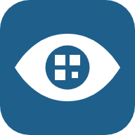

Point your phone camera at the code
To add it to your home screen, open this page in Safari.
After that, open it from the icon. It works without signal.
Choose one or more
We're running a pilot. Tell us your role and where you mainly work, once, so we can see who finds the app useful.
Your role
Where you mainly work
Your site